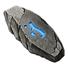
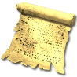
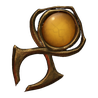
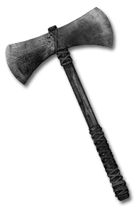
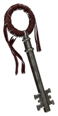
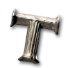

About Legacy of the Horadrim
Legacy of the Horadrim
Legacy of the Horadrim (LotH) is a free, offline mod for Diablo II: Resurrected with Reign of the Warlock 3.x.
It covers the whole campaign, Normal to Hell, and the endgame after Baal: the Sanctuary Stones and the Descent.
- Windows or Steam DeckMade to play with a controller.
- Game data onlyNo programs, drivers or overlays to install.
- Fully offlineIt never touches Battle.net or online characters.
Public alpha. Back up your saves before updating.
Install the mod →



What the mod adds
Equipment, stories and roads beyond Baal.
What guides the mod
Keep the campaign familiar
Vanilla campaign areas, monsters and drop rates remain the foundation; the endgame opens after Baal.
Stay true to Sanctuary
Names, bosses and text belong in Sanctuary in 1264 and follow Diablo II's voice.

Roads beyond Baal
Sanctuary Stones, the Descent and the pinnacles form a long climb, with rare items to pursue along the way.

Controller first
Single-player and Steam Deck friendly, the mod uses only game data, needs no loaders and puts controller play first.
Credits
Diablo II: Resurrected, Diablo and Blizzard Entertainment are trademarks or registered trademarks of Blizzard Entertainment, Inc. The game, its data and its art are © Blizzard Entertainment, Inc. Legacy of the Horadrim is a free, non-commercial fan mod. It is not affiliated with, endorsed or sponsored by Blizzard Entertainment. You need your own copy of Diablo II: Resurrected to play.
What the mod contains
Game tables, strings, maps and icons that we generated from the game's own data and our own specifications. It contains no Blizzard executable and no copied game archive. Item art shown on the wiki is Blizzard's, used here with credit for reference.
Thanks to other mods
We thank the Diablo II and Diablo II: Resurrected modding community, whose open mods advanced the craft and inspired this one. We studied how they solved problems; we copied no data, maps, art or text from them.
Licences
- Our data, maps and text
- CC BY-NC-SA 4.0
- Build tools
- MIT
- Fonts
- SIL Open Font License (OFL.txt)
Contact and takedown
We act on any rights-holder request promptly.
Open an issue on GitHub →Write through horadrimlegacy.com →